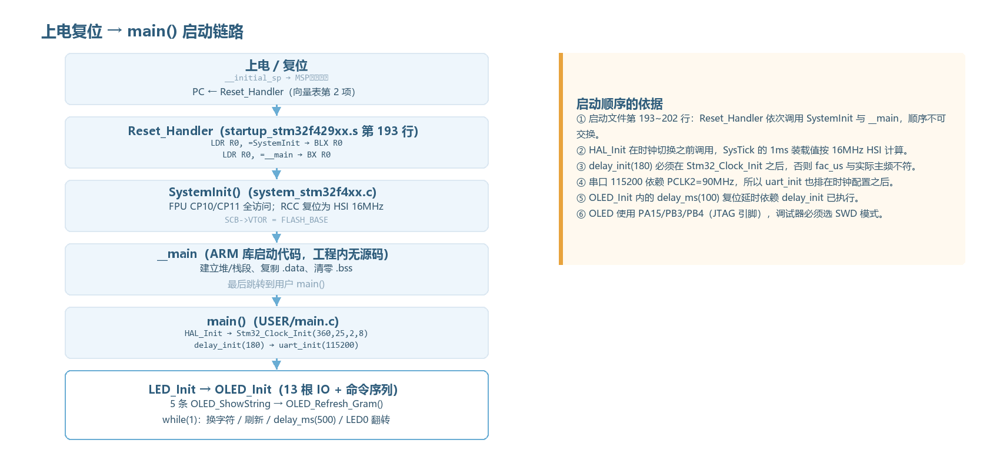
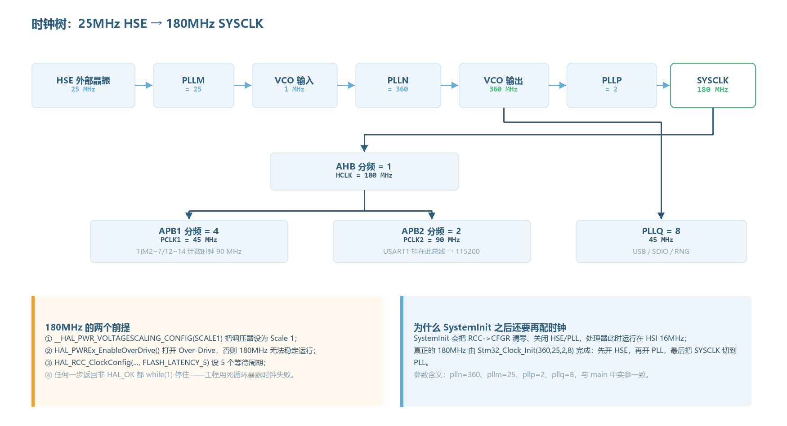
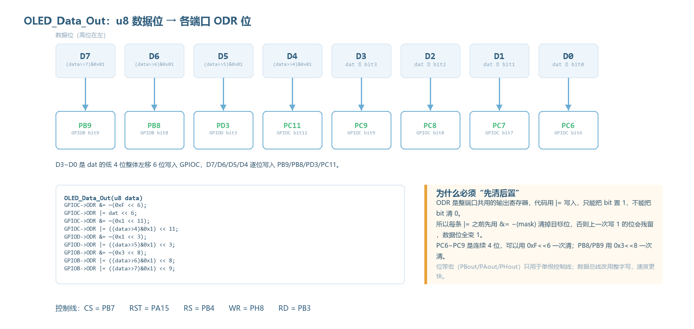
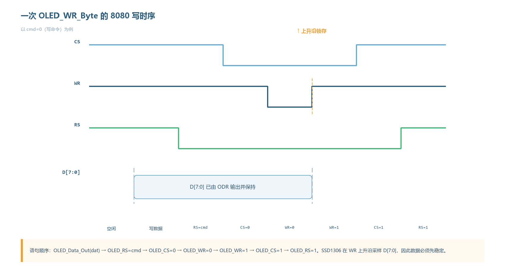
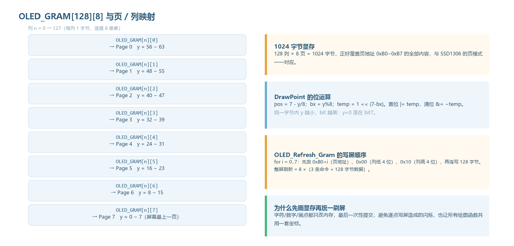

01 实验目标与硬件资源
在最小系统框架上加一块 SSD1306 OLED，先看清“用了哪些引脚、跑在多高主频”
本实验在“时钟 + 延时 + 串口 + LED”这套最小框架上增加一片 0.96 寸 128×64 的 OLED 屏。页面按“上电 → 时钟 → 时基 → 外设 → 主循环”的顺序展开，所有数值都取自 实验11 OLED显示实验 目录下的源码。
| 项目 | 配置 | 出处 |
|---|---|---|
| 主控 | STM32F429IGT6，180MHz，1MB Flash / 192KB RAM | OLED.uvprojx 的 Device、Cpu 行 |
| 显示屏 | 0.96 寸 OLED，128×64，SSD1306 控制器 | oled.c 显存与命令表 |
| 接口方式 | 8080 并口（OLED_MODE = 1） | oled.h |
| 数据线 | D0~D3 = PC6~PC9，D4 = PC11，D5 = PD3，D6 = PB8，D7 = PB9 | oled.c 的 OLED_Data_Out |
| 控制线 | CS = PB7，RST = PA15，RS = PB4，WR = PH8，RD = PB3 | oled.h 端口宏 |
| LED | LED0 = PB1，LED1 = PB0（位带宏操作） | led.h |
| 串口 | USART1，PA9 / PA10，115200-8-N-1 | usart.c 的 HAL_UART_MspInit |
| SysTick | 时钟源 HCLK，delay_init(180) | delay.c |
与实验10 的差异
| 对比项 | 实验10 电容触摸按键 | 实验11 OLED 显示 |
|---|---|---|
| 核心外设 | TIM5 输入捕获 + TPAD 充放电计数 | GPIO 输出 + 1KB 显存 + SSD1306 命令序列 |
| 数据方向 | 读引脚（输入） | 写引脚（输出，13 根 IO） |
| 共性部分 | HAL_Init、Stm32_Clock_Init、delay_init、uart_init、LED_Init 完全一致 | |
128 × 64 像素
8 页 × 128 列
1024 字节显存
12 / 16 / 24 号字库
13 根 GPIO
调试注意：PA15、PB3、PB4 默认是 JTAG 的 JTDI、JTDO、NJTRST。OLED 把这三根脚改成普通推挽输出后 JTAG 不可用，Keil 里必须选 SWD 模式（SWD 只用 PA13 / PA14）。
02 工程目录与文件分工
先知道改哪个文件，再看启动顺序
| 文件 | 职责 | 本页关注点 |
|---|---|---|
CORE/startup_stm32f429xx.s | 栈堆定义、向量表、Reset_Handler | 复位入栈与跳转顺序 |
USER/system_stm32f4xx.c | SystemInit：FPU、RCC 复位、VTOR | 为什么上电先跑 16MHz |
USER/stm32f4xx_it.c | 异常处理与 SysTick_Handler | HAL_IncTick 时基 |
USER/main.c | 初始化顺序与主循环 | 整条启动链 唯一入口 |
SYSTEM/sys/sys.c | Stm32_Clock_Init 时钟配置、位带宏 | 180MHz 的来源 |
SYSTEM/delay/delay.c | SysTick 计数式 delay_us / delay_ms | OLED 复位延时的基础 |
SYSTEM/usart/usart.c | USART1 初始化、printf 重定向、接收中断 | USART1_IRQHandler 的实际定义处 |
HARDWARE/LED/led.c | PB0 / PB1 推挽输出 | 主循环里的心跳灯 |
HARDWARE/OLED/oled.c | 端口映射、写时序、显存、字符显示 | 本实验的核心 |
HARDWARE/OLED/oledfont.h | asc2_1206 / asc2_1608 / asc2_2412 字库 | 字号与取模字节数 |
HALLIB 目录是 ST 官方库，本页不逐行展开，只在解释 HAL_Init 与 HAL_InitTick 时引用其中的实现。
工程宏定义只有两个：
USE_HAL_DRIVER 与 STM32F429xx；器件型号 STM32F429IGTx，IROM 从 0x08000000 起 1MB，IRAM 从 0x20000000 起 192KB。03 启动流程总览
从上电取栈顶到 while(1)，六步走完整个启动链

main 函数全文（USER/main.c）
int main(void)
{
u8 t=0;
HAL_Init(); //初始化HAL库
Stm32_Clock_Init(360,25,2,8); //设置时钟,180Mhz
delay_init(180); //初始化延时函数
uart_init(115200); //初始化USART
LED_Init(); //初始化LED
OLED_Init(); //初始化OLED
OLED_ShowString(0,0,"ALIENTEK",24);
OLED_ShowString(0,24, "0.96' OLED TEST",16);
OLED_ShowString(0,40,"ATOM 2014/5/4",12);
OLED_ShowString(0,52,"ASCII:",12);
OLED_ShowString(64,52,"CODE:",12);
OLED_Refresh_Gram(); //更新显示到OLED
t=' ';
while(1)
{
OLED_ShowChar(36,52,t,12,1); //显示ASCII字符
OLED_ShowNum(94,52,t,3,12); //显示ASCII字符的码值
OLED_Refresh_Gram(); //更新显示到OLED
t++;
if(t>'~')t=' ';
delay_ms(500);
LED0=!LED0;
}
}
初始化顺序不能随意交换：
HAL_Init 只建立时基与优先级分组；Stm32_Clock_Init 决定 delay 的倍乘数；delay_init(180) 必须在时钟切换之后；OLED 复位要等 100ms，因此 OLED_Init 排在最后。04 启动文件与向量表
Cortex-M4 复位时只认两样东西：栈顶地址和复位入口
启动文件开头用 Stack_Size EQU 0x400 与 Heap_Size EQU 0x200 定义栈和堆，随后把 __initial_sp 放在向量表第 0 项、Reset_Handler 放在第 1 项。硬件复位时自动把这两个值装入 MSP 和 PC。
| 区域 | 大小 / 地址 | 说明 |
|---|---|---|
| Stack | 0x400（1KB） | 启动文件中 Stack_Size |
| Heap | 0x200（512B） | 启动文件中 Heap_Size，本工程未用 malloc |
| IROM | 0x08000000，1MB | OLED.uvprojx 的 Cpu 行 |
| IRAM | 0x20000000，192KB | OLED_GRAM 占 1KB |
| IRAM2 | 0x10000000，64KB | CCM 内存 |
Reset_Handler（startup_stm32f429xx.s 第 193 行）
Reset_Handler PROC
EXPORT Reset_Handler [WEAK]
IMPORT SystemInit
IMPORT __main
LDR R0, =SystemInit
BLX R0
LDR R0, =__main
BX R0
ENDP
向量表前几项与弱符号
| 偏移 | 向量 | 本工程实现位置 |
|---|---|---|
| 0x00 | __initial_sp | 启动文件栈顶 |
| 0x04 | Reset_Handler | 启动文件，跳 SystemInit → __main |
| 0x08 | NMI_Handler | stm32f4xx_it.c（空函数） |
| 0x0C | HardFault_Handler | stm32f4xx_it.c（while(1)） |
| 0x3C | SysTick_Handler | stm32f4xx_it.c（HAL_IncTick） |
| 0x40 起 | IRQ0 ~ IRQn | USART1_IRQHandler 在 usart.c |
启动文件里的异常处理函数都带 [WEAK]，默认实现是 B . 原地死循环。只要工程里出现同名 C 函数，链接器就用强符号覆盖它。
容易看漏的一点：
USART1_IRQHandler 并不在 stm32f4xx_it.c，而是写在 SYSTEM/usart/usart.c 里；它覆盖的正是启动文件中那个弱符号。找中断函数时别只翻 it.c。05 SystemInit 与 HAL_Init
一个负责“回到出厂状态”，一个负责“建立 HAL 的运行前提”
SystemInit：把 RCC 复位成 HSI 16MHz
void SystemInit(void)
{
#if (__FPU_PRESENT == 1) && (__FPU_USED == 1)
SCB->CPACR |= ((3UL << 10*2)|(3UL << 11*2)); /* CP10/CP11 全访问 */
#endif
RCC->CR |= (uint32_t)0x00000001; /* 打开 HSI */
RCC->CFGR = 0x00000000; /* 时钟源回到 HSI */
RCC->CR &= (uint32_t)0xFEF6FFFF; /* 关 HSEON / CSSON / PLLON */
RCC->PLLCFGR = 0x24003010;
RCC->CIR = 0x00000000; /* 关所有中断 */
SCB->VTOR = FLASH_BASE | VECT_TAB_OFFSET;
}
HAL_Init：四个动作
| 顺序 | 代码 | 结果 |
|---|---|---|
| 1 | __HAL_FLASH_INSTRUCTION_CACHE_ENABLE 等 | 指令缓存、数据缓存、预取全部打开（宏都为 1） |
| 2 | HAL_NVIC_SetPriorityGrouping(NVIC_PRIORITYGROUP_2) | 2 位抢占 + 2 位子优先级，抢占与子优先级均 0~3 |
| 3 | HAL_InitTick(0x0F) | 配置 SysTick 为 1ms 时基，优先级 15 |
| 4 | HAL_MspInit() | 弱空函数，本工程未重写，只保留库里默认实现 |
关键细节：
HAL_Init 在 Stm32_Clock_Init 之前执行，此刻 HCLK 还是 HSI 16MHz，所以 HAL_SYSTICK_Config(16000000/1000) 得到 LOAD = 16000。切到 180MHz 后这个值没有重算，1ms 中断实际变成约 88.9µs。因此本工程从不使用 HAL_Delay / HAL_GetTick，全部延时走 delay_us / delay_ms。06 系统时钟：25MHz → 180MHz
PLL 的四个参数决定主频、USB 时钟与两条外设总线

| 环节 | 参数 | 计算结果 |
|---|---|---|
| 外部晶振 | HSE，hal_conf 中 HSE_VALUE = 25000000 | 25 MHz |
| PLL 输入分频 | PLLM = 25 | 25 / 25 = 1 MHz |
| VCO 倍频 | PLLN = 360 | 1 × 360 = 360 MHz |
| 系统时钟分频 | PLLP = 2 | 360 / 2 = 180 MHz |
| USB / SDIO / RNG | PLLQ = 8 | 360 / 8 = 45 MHz |
| AHB 分频 | RCC_SYSCLK_DIV1 | HCLK = 180 MHz |
| APB1 分频 | RCC_HCLK_DIV4 | PCLK1 = 45 MHz |
| APB2 分频 | RCC_HCLK_DIV2 | PCLK2 = 90 MHz |
| Flash 等待 | FLASH_LATENCY_5 | 5 个等待周期 |
调用点与关键代码
Stm32_Clock_Init(360,25,2,8); // main.c：plln, pllm, pllp, pllq __HAL_PWR_VOLTAGESCALING_CONFIG(PWR_REGULATOR_VOLTAGE_SCALE1); // 调压器 Scale1 RCC_OscInitStructure.OscillatorType = RCC_OSCILLATORTYPE_HSE; RCC_OscInitStructure.PLL.PLLM = pllm; // 25 RCC_OscInitStructure.PLL.PLLN = plln; // 360 RCC_OscInitStructure.PLL.PLLP = pllp; // 2 RCC_OscInitStructure.PLL.PLLQ = pllq; // 8 ret = HAL_PWREx_EnableOverDrive(); // 开启 Over-Drive RCC_ClkInitStructure.AHBCLKDivider = RCC_SYSCLK_DIV1; RCC_ClkInitStructure.APB1CLKDivider = RCC_HCLK_DIV4; RCC_ClkInitStructure.APB2CLKDivider = RCC_HCLK_DIV2; HAL_RCC_ClockConfig(&RCC_ClkInitStructure, FLASH_LATENCY_5); if(ret != HAL_OK) while(1);
180MHz 的三个前提缺一不可：调压器 Scale 1、Over-Drive 使能、Flash 5 个等待周期。任一
HAL_RCC_OscConfig / HAL_RCC_ClockConfig 返回非 HAL_OK，工程直接 while(1) 停住，用“死在原地”暴露时钟失败。07 延时与 SysTick
两行配置就能把 180MHz 换算成微秒，靠的是“数 VAL 递减了多少”
void delay_init(u32 SYSCLK)
{
SysTick_CLKSourceConfig(SysTick_CLKSource_HCLK); // 计数时钟 = HCLK
fac_us = SYSCLK; // 180
}
void delay_us(u32 nus)
{
u32 ticks;
u32 told, tnow, tcnt = 0;
u32 reload = SysTick->LOAD;
ticks = nus * fac_us; // 1us 需要 180 个计数
told = SysTick->VAL;
while (1)
{
tnow = SysTick->VAL;
if (tnow != told)
{
if (tnow < told) tcnt += told - tnow;
else tcnt += reload - tnow + told; // 处理回绕
told = tnow;
if (tcnt >= ticks) break;
}
}
}
| 参数 | 值 | 说明 |
|---|---|---|
| fac_us | 180 | 由 delay_init(180) 传入，等于 HCLK 的 MHz 数 |
| SysTick 时钟源 | HCLK（180MHz） | SysTick_CLKSource_HCLK |
| SysTick->LOAD | 16000 | HAL_Init 在 16MHz 时写入，之后未重算 |
| 1 个计数 | 1 / 180MHz ≈ 5.56ns | 倒数计数 |
| delay_ms(500) | 500 × 1000 × 180 = 90 000 000 | 约 0.5 秒 |
为什么 LOAD = 16000 不影响延时精度：
delay_us 只统计“VAL 走过多少个计数”，用 nus × 180 换算，与 LOAD 大小无关；reload 变量只用于补偿回绕。真正受影响的是依赖 1ms 中断的 HAL_Delay。08 串口初始化与 printf 重定向
PA9 / PA10 复用为 AF7，115200 波特率依赖 PCLK2 = 90MHz
| 项目 | 配置 | 出处 |
|---|---|---|
| 外设 | USART1 | uart_init |
| 发送引脚 | PA9，AF7，复用推挽 | HAL_UART_MspInit |
| 接收引脚 | PA10，AF7，上拉输入 | HAL_UART_MspInit |
| 波特率 | 115200，8 数据位，1 停止位，无校验，无流控 | UART1_Handler.Init |
| 中断优先级 | 抢占 3，子优先级 3 | HAL_NVIC_SetPriority |
| 接收缓冲 | USART_REC_LEN = 200 字节，RXBUFFERSIZE = 1 | usart.h / usart.c |
printf 重定向与初始化
// 把 printf 的输出重定向到 USART1 int fputc(int ch, FILE *f) { while((USART1->SR & 0X40) == 0); // 等待发送完成 USART1->DR = (u8) ch; return ch; } void uart_init(u32 bound) { UART1_Handler.Instance = USART1; UART1_Handler.Init.BaudRate = bound; UART1_Handler.Init.WordLength = UART_WORDLENGTH_8B; UART1_Handler.Init.StopBits = UART_STOPBITS_1; UART1_Handler.Init.Parity = UART_PARITY_NONE; UART1_Handler.Init.Mode = UART_MODE_TX_RX; UART1_Handler.Init.HwFlowCtl = UART_HWCONTROL_NONE; UART1_Handler.Init.OverSampling = UART_OVERSAMPLING_16; HAL_UART_Init(&UART1_Handler); HAL_UART_Receive_IT(&UART1_Handler, (u8 *)aRxBuffer, RXBUFFERSIZE); }
接收状态机的标志位
| 位 | 含义 |
|---|---|
| bit15 | 一帧接收完成 |
| bit14 | 已收到回车 0x0D，等待 0x0A |
| bit13~0 | 本次已接收的有效字节数 |
USART1_IRQHandler 定义在 usart.c 末尾，中断里先调用 HAL_UART_IRQHandler，再重新挂上 HAL_UART_Receive_IT 以继续接收下一字节。主循环里没有 printf，所以本实验串口只初始化、不输出。09 LED 与位带操作
PB1 的 ODR 位被映射成一个 32 位地址，赋值即改引脚
// SYSTEM/sys/sys.h 中的位带宏 #define BITBAND(addr, bitnum) ((addr & 0xF0000000)+0x2000000+((addr &0xFFFFF)<<5)+(bitnum<<2)) #define MEM_ADDR(addr) *((volatile unsigned long *)(addr)) #define BIT_ADDR(addr, bitnum) MEM_ADDR(BITBAND(addr, bitnum)) #define PBout(n) BIT_ADDR(GPIOB_ODR_Addr,n) // 输出 #define PHout(n) BIT_ADDR(GPIOH_ODR_Addr,n) // 输出 // HARDWARE/LED/led.h #define LED0 PBout(1) // LED0 接 PB1 #define LED1 PBout(0) // LED1 接 PB0
| 宏 | 等价操作 | 本工程用途 |
|---|---|---|
| PBout(1) | 写 GPIOB->ODR 的 bit1 | LED0，主循环每 500ms 翻转 |
| PBout(0) | 写 GPIOB->ODR 的 bit0 | LED1，本实验未使用 |
| PAout(15) | 写 GPIOA->ODR 的 bit15 | OLED_RST |
| PHout(8) | 写 GPIOH->ODR 的 bit8 | OLED_WR |
位带只适用于单根引脚的置位/清位，读改写是原子操作；
LED_Init 把 PB0、PB1 都初始化为推挽输出并置 1（灯灭），所以主循环第一次 LED0=!LED0 后灯才亮。10 OLED 数据线与端口映射
8 根数据线被拆到 4 个端口，写一个字节要改 5 处 ODR

| LCD 信号 | STM32 引脚 | 片内外设 | 代码写法 |
|---|---|---|---|
| D0 | PC6 | GPIOC ODR bit6 | dat << 6 的 bit0 |
| D1 | PC7 | GPIOC ODR bit7 | dat << 6 的 bit1 |
| D2 | PC8 | GPIOC ODR bit8 | dat << 6 的 bit2 |
| D3 | PC9 | GPIOC ODR bit9 | dat << 6 的 bit3 |
| D4 | PC11 | GPIOC ODR bit11 | (data>>4)&1 |
| D5 | PD3 | GPIOD ODR bit3 | (data>>5)&1 |
| D6 | PB8 | GPIOB ODR bit8 | (data>>6)&1 |
| D7 | PB9 | GPIOB ODR bit9 | (data>>7)&1 |
| CS | PB7 | GPIOB 位带 | OLED_CS |
| RST | PA15 | GPIOA 位带 | OLED_RST |
| RS（D/C） | PB4 | GPIOB 位带 | OLED_RS |
| WR | PH8 | GPIOH 位带 | OLED_WR |
| RD | PB3 | GPIOB 位带 | OLED_RD |
OLED_MODE = 1 时走 8080 并口；若改成 0，则同一份代码切换到 4 线 SPI（PC6 = SCLK、PC7 = SDIN），OLED_WR_Byte 内部由 #if OLED_MODE 选择实现。11 8080 写时序
7 条语句完成一次写，SSD1306 在 WR 上升沿采样数据

void OLED_WR_Byte(u8 dat, u8 cmd)
{
OLED_Data_Out(dat); // 1. 数据先上线
OLED_RS = cmd; // 2. 0=命令，1=数据
OLED_CS = 0; // 3. 选中 OLED
OLED_WR = 0; // 4. 写脉冲开始
OLED_WR = 1; // 5. 上升沿，SSD1306 采样
OLED_CS = 1; // 6. 释放片选
OLED_RS = 1; // 7. RS 回默认高
}
| 步骤 | 动作 | 为什么这个顺序 |
|---|---|---|
| 1 | 数据写入 ODR | 数据必须在 WR 上升沿之前稳定 |
| 2 | 设置 RS | 区分本次是命令（0）还是显存数据（1） |
| 3 | CS 拉低 | 选中器件，避免误接收 |
| 4~5 | WR 低 → 高 | 上升沿锁存，脉冲宽度由指令周期决定 |
| 6~7 | CS / RS 释放 | 回到空闲电平，准备下一次写 |
代码里没有任何
delay 或 NOP，脉宽由 180MHz 下几条 STR 指令决定（几十 ns 量级），满足 SSD1306 的写周期要求；如果把主频降到很低，需要重新评估这个时序。12 OLED_Init 初始化序列
先硬件复位，再按固定顺序写 16 条命令，最后清屏
OLED_RST = 0; delay_ms(100); // 复位至少保持 100ms OLED_RST = 1; OLED_WR_Byte(0xAE, OLED_CMD); // 关闭显示 OLED_WR_Byte(0xD5, OLED_CMD); // 设置时钟分频因子 / 振荡频率 OLED_WR_Byte(80, OLED_CMD); // [3:0] 分频，[7:4] 频率 OLED_WR_Byte(0xA8, OLED_CMD); // 设置驱动路数 OLED_WR_Byte(0x3F, OLED_CMD); // 1/64 duty OLED_WR_Byte(0xD3, OLED_CMD); // 设置显示偏移 OLED_WR_Byte(0x00, OLED_CMD); // 偏移 0 OLED_WR_Byte(0x40, OLED_CMD); // 显示开始行 = 0 OLED_WR_Byte(0x8D, OLED_CMD); // 电荷泵设置 OLED_WR_Byte(0x14, OLED_CMD); // bit2 = 1，开启电荷泵 OLED_WR_Byte(0x20, OLED_CMD); // 设置内存寻址模式 OLED_WR_Byte(0x02, OLED_CMD); // 页地址模式 OLED_WR_Byte(0xA1, OLED_CMD); // 段重映射，左右方向 OLED_WR_Byte(0xC0, OLED_CMD); // COM 扫描方向，上下方向 OLED_WR_Byte(0xDA, OLED_CMD); // COM 硬件引脚配置 OLED_WR_Byte(0x12, OLED_CMD); OLED_WR_Byte(0x81, OLED_CMD); // 对比度 OLED_WR_Byte(0xEF, OLED_CMD); OLED_WR_Byte(0xD9, OLED_CMD); // 预充电周期 OLED_WR_Byte(0xF1, OLED_CMD); OLED_WR_Byte(0xDB, OLED_CMD); // VCOMH 电压倍率 OLED_WR_Byte(0x30, OLED_CMD); OLED_WR_Byte(0xA4, OLED_CMD); // 全局显示开启 OLED_WR_Byte(0xA6, OLED_CMD); // 正常显示（非反色） OLED_WR_Byte(0xAF, OLED_CMD); // 开启显示 OLED_Clear(); OLED_Refresh_Gram();
| 命令 | 参数 | 作用 |
|---|---|---|
| 0xAE / 0xAF | — | 关显示 / 开显示 |
| 0xD5 | 0x50（即 80） | 时钟分频与振荡频率 |
| 0xA8 / 0x3F | 0x3F | 驱动路数 1/64 |
| 0xD3 / 0x00 | 0x00 | 显示垂直偏移 0 |
| 0x8D / 0x14 | 0x14 | 开启电荷泵（不开则屏不亮） |
| 0x20 / 0x02 | 0x02 | 页地址模式，配合 0xB0~0xB7 使用 |
| 0xA1 / 0xC0 | — | 段重映射 / COM 扫描方向，决定画面朝向 |
| 0x81 / 0xEF | 0xEF | 对比度 |
| 0xD9 / 0xF1 | 0xF1 | 预充电周期 |
| 0xDB / 0x30 | 0x30 | VCOMH 电压 |
顺序要点：
OLED_RST 必须先拉低再延时 100ms 拉高；电荷泵（0x8D / 0x14）必须在开显示之前；0x20 / 0x02 决定后续刷新能否只用 0xB0+i 切页。oled.c 里还多开了一个 GPIOF 时钟（
__HAL_RCC_GPIOF_CLK_ENABLE()），但 GPIOF 并未被使用，属于冗余代码，不影响功能。13 显存结构与整屏刷新
1KB 数组就是整块屏幕，画点改内存，刷新才走硬件

u8 OLED_GRAM[128][8]; // 128 列 × 8 页 = 1024 字节 void OLED_DrawPoint(u8 x, u8 y, u8 t) { u8 pos, bx, temp = 0; if (x > 127 || y > 63) return; pos = 7 - y / 8; // 页号：屏幕上方对应 GRAM 的高索引 bx = y % 8; // 页内第几行 temp = 1 << (7 - bx);// 页内 bit 位置 if (t) OLED_GRAM[x][pos] |= temp; else OLED_GRAM[x][pos] &= ~temp; } void OLED_Refresh_Gram(void) { u8 i, n; for (i = 0; i < 8; i++) { OLED_WR_Byte(0xb0 + i, OLED_CMD); // 页地址 0xB0~0xB7 OLED_WR_Byte(0x00, OLED_CMD); // 列地址低 4 位 OLED_WR_Byte(0x10, OLED_CMD); // 列地址高 4 位 for (n = 0; n < 128; n++) OLED_WR_Byte(OLED_GRAM[n][i], OLED_DATA); } }
| 项目 | 值 | 说明 |
|---|---|---|
| 显存数组 | u8 OLED_GRAM[128][8] | 1KB，位于 IRAM |
| 页数 | 8 | 每页 8 行像素 |
| 每页字节数 | 128 | 对应 128 列 |
| 一次刷新 | 8 × (3 条命令 + 128 字节) | 约 1048 次写操作 |
| 字节内位序 | y 越小 bit 越高 | 1 << (7 - y%8) |
pos = 7 - y/8 决定页序，1 << (7 - y%8) 决定字节内位序，这两处只要有一处写反，屏幕就会上下颠倒或整行错位。14 字符、字符串与数字显示
字号决定字库、字符宽度和每个字符占用的字节数
| size | csize 计算 | 字库 | 字符宽 × 高 |
|---|---|---|---|
| 12 | (12/8 + 1) × (12/2) = 12 | asc2_1206[95][12] | 6 × 12 |
| 16 | (16/8 + 0) × (16/2) = 16 | asc2_1608[95][16] | 8 × 16 |
| 24 | (24/8 + 0) × (24/2) = 36 | asc2_2412[95][36] | 12 × 24 |
void OLED_ShowChar(u8 x, u8 y, u8 chr, u8 size, u8 mode)
{
u8 temp, t, csize;
u8 y0 = y;
csize = (size / 8 + ((size % 8) ? 1 : 0)) * (size / 2);
chr = chr - ' '; // 字库从空格开始
for (t = 0; t < csize; t++)
{
if (size == 12) temp = asc2_1206[chr][t];
else if (size == 16) temp = asc2_1608[chr][t];
else if (size == 24) temp = asc2_2412[chr][t];
else return; // 其它字号不支持
...
}
}
// OLED_ShowNum 中的前导零处理
if (enshow == 0 && t < (len - 1))
{
if (temp == 0) { OLED_ShowChar(x + (size/2)*t, y, ' ', size, 0); continue; }
else enshow = 1;
}
本实验用到的 7 处显示调用
| 坐标 (x, y) | 内容 | 字号 |
|---|---|---|
| (0, 0) | "ALIENTEK" | 24 |
| (0, 24) | "0.96' OLED TEST" | 16 |
| (0, 40) | "ATOM 2014/5/4" | 12 |
| (0, 52) | "ASCII:" | 12 |
| (64, 52) | "CODE:" | 12 |
| (36, 52) | 当前 ASCII 字符 | 12 |
| (94, 52) | 3 位码值 | 12 |
OLED_ShowNum 用 len = 3 且开启 enshow 消零逻辑，前导 0 会被空格替代，所以码值 65 显示为“ 65”而不是“065”。15 主循环与实验现象
每 500ms 换一个字符、翻转一次 LED0，一轮 95 步约 47.5 秒
while(1)
{
OLED_ShowChar(36,52,t,12,1); // 在 "ASCII:" 右侧显示字符
OLED_ShowNum(94,52,t,3,12); // 在 "CODE:" 右侧显示码值
OLED_Refresh_Gram(); // 整屏 1024 字节刷新
t++;
if(t > '~') t = ' '; // 0x7E 之后回到 0x20
delay_ms(500);
LED0 = !LED0;
}
| 观察到的现象 | 对应源码 | 推算 |
|---|---|---|
| 屏幕上字符每 500ms 变一次 | t++ 与 delay_ms(500) | 字符从空格 0x20 到 ~ 0x7E |
| 右侧码值同步变化 | OLED_ShowNum(94,52,t,3,12) | 3 位十进制，最大 126 |
| 一轮约 47.5 秒 | t <= '~' 时回卷 | 95 × 500ms = 47.5s |
| LED0 以约 1Hz 闪烁 | LED0 = !LED0 | 500ms 亮、500ms 灭 |
| 串口无输出 | 主循环未调用 printf | uart_init 只做初始化 |
主循环演示：每点一次 = 执行一次 while(1) 循环
LED0（PB1）
本轮显示：“ ” 码值： 32 LED0：灭 已完成 0 轮
演示只维护变量
t、LED0 与循环次数，显示位置、字号、回卷条件都与源码一致；真实硬件上每轮还要额外执行一次 1024 字节的整屏刷新。16 常见问题排查与总结
现象 → 原因 → 排查位置，按这条链走能省很多时间
| 现象 | 可能原因 | 排查位置 |
|---|---|---|
| 整屏不亮 | 电荷泵未开 / RST 时序不对 | 0x8D 0x14、RST 低电平 100ms |
| 全屏点亮或花屏 | ODR 未先清位 / 数据线顺序错 | OLED_Data_Out 的掩码与 D0~D7 映射 |
| 字符上下颠倒 | 段重映射 / COM 扫描方向错 | 0xA1、0xC0 两个参数 |
| 改字号后显示乱码 | 字库与 size 不匹配 | size 只能 12/16/24，csize 与数组维度对应 |
| 下载后无法调试 | PA15 / PB3 / PB4 被 OLED 占用 | Keil 调试口改为 SWD |
| 换 SPI 屏不显示 | OLED_MODE 未改 / BS1、BS2 接法 | 模块 BS1、BS2 接地，改 OLED_MODE = 0 |
| 编译报半主机错误 | 未做 printf 重定向 | 保留 __use_no_semihosting 与 fputc |
| 只有半屏有内容 | 刷新循环页数不足 | for(i = 0; i < 8; i++) |
全链路回顾
复位取栈顶 → SystemInit 复位 RCC、开 FPU、设 VTOR → __main 建立段 → HAL_Init 建时基与优先级分组 → Stm32_Clock_Init 把 25MHz HSE 变 180MHz → delay_init 用 HCLK 校准 delay_us → uart_init 配 PA9 / PA10 → LED_Init 配 PB0 / PB1 → OLED_Init 配 13 根 IO 并写命令序列 → 主循环改显存、整屏刷新、500ms 翻转 LED0。
排查时沿着“时钟 → 时基 → 引脚 → 控制器 → 主循环”这条链逐环确认：主频对不对、delay 准不准、13 根 IO 是否都配成推挽输出、初始化命令有没有漏、刷新循环是否写满 8 页。